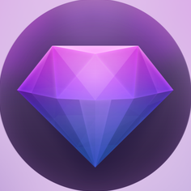

Mission
At Colorscope, our mission is to simplify the process of
color detection and understandingby leveraging advanced Python libraries and
RGB color values.We aim to make color exploration accessible to everyone
Vision
Our vision is to become the go-to platform for color enthusiasts, designers, and professionals alike, providing
them with comprehensive tools and resources to explore, analyze, and utilize colors in their projects.
Achivements
Developed a robust color detection algorithm for precise extraction of RGB values.
Created an intuitive user interface for seamless color exploration.
Established a vibrant community of color enthusiasts worldwide.